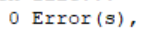

对于C语言的初学者来说，最熟悉的大概是printf输出函数了，STM32单片机一般使用C语言编程，那么如何在STM32单片机中使用printf呢
准备工作
硬件
这里使用STM32F401CCUx作为演示
jlink——用于烧录单片机以及串口通信测试
软件
STM32CubeMX
Keil
（基于HAL库进行开发）
串口调试助手
关于串口调试助手
串口调试助手建议下载微软应用商店里的，名字就是叫串口调试助手

图标就是这个样子
FAQ
为什么我的微软应用商店打不开？
因为种种我也不知道什么原因，微软的服务器在部分网咯下访问速度十分缓慢（装vs2019的小盆友应该能够感受到，所以建议使用手机热点开流量下载，这样会快一些
开始抄代码配置您的printf函数
背景知识
在stm32单片机中，printf函数是无法打印到控制台的。为了让这个函数能实现打印功能，我们必须要把这个函数重定向，让它重定向到串口中，把要输出的内容打印到串口中。为此需要以下几步。
新建一个工程
（老玩家请跳过）
首先打开STM32CubeMX
点击画圈部分新建一个工程
选择我们要用的开发板STM32F401CCUx
之后开始配置时钟
先打开高速陶瓷晶振
找到上方的Clock Configuration
配置时钟，配置成果如图
配置串口
打开它的1号串口（请确保您的PA9和PA10引脚未被占用，后面会作说明）
之后您会在右边的芯片示意图上看到串口1的引脚被占用，表示串口1已开启
即可知PA9和PA10为串口1的引脚，PA9为TX，PA10为RX，请记住这个引脚名，之后需要使用
可以在界面的中间下部看到串口1的控制台
这里对控制台的一些基本设置做出解释，之后做串口通信时您需要对这些数据进行统一，否则会有非常鬼畜的现象（
| 名称 | 用途 |
|---|---|
| Baud Rate | 波特率，一般都为115200，有时也有用9600 |
| Word Length | 数据位，一般为8 |
| Parity | 校验位，一般为None |
| Stop Bits | 停止位，一般为1，有的地方称为One |
我们这里全部使用默认参数配置
代码
完成以上配置之后
进入上方标签的project manager
设置project name和project location
之后找到这个东西

改成
点击右上角GENERATE CODE
完成之后点击open project，在keil中打开项目
打开main.c，在这个绿色位置
准备插入代码，这里说明一下，在使用CubeMX做开发时，我们的代码要写在注释USER CODE BEGIN和USER CODE END位置，防止下次更新代被覆盖
我们继续下一步操作，在上面说的位置插入代码
1 |
|
此代码将printf重定向到串口输出
至此，教程结束
测试
代码
在main.c的主函数main()里面有一段这样的代码
我们在USER CODE END WHILE之前写我们的测试代码
举个栗子
1 | printf("Lakphy"); |
这里的HAL_Delay是加一个延迟，防止串口通信频率太高卡死
就是酱紫

接线
这里给出jlink接线方式
下面是烧写程序用的
| jlink | stm32 |
|---|---|
| GND | GND |
| 3.3V | 3V3 |
| CLK | SCK |
| SWO | DIO |
下面是串口通信用的
| jlink | stm32 | 意义 |
|---|---|---|
| TXD | PA10 | RX |
| RXD | PA9 | TX |
亲测可以同时接在一起，没有任何问题
实物图

烧录
先进行一些必要的设置
这一排东西
找到
这个按钮
点击进入options
这里，改一下
改成这样（本来是可选操作的，但后面有操作需要它，所以这里都改成6.14吧）
可以明显提升编译速度
看见这一排没有

点Debug，找到这里
改成我们的jlink
然后点下面的ok保存设置
看到左上角一排按键有没有
再放大
左数第二个是编译，第三个是全部编译，右数第一个是烧录
一般第一次打开项目或者你出现莫名其妙bug时候都要用全部编译，其他都是直接编译就行了。如果不怕费时间直接每次都全部编译也没有问题（
编译之后下面显示类似这样表示编译正常，没有错误
重点是这个

众所周知 Warnings都没啥用
然后点烧录

可能提示这个
不理会
然后看到下面这个
继续等待
出现这个
表明烧录成功
观察实验现象
不要断开jlink，打开串口调试助手
回忆我们之前在CubeMX做的配置
将其应用到串口调试助手
这样
发现我们的参数和串口调试助手默认的一样，所以本次实验可以直接打开串口，无需配置
点击打开串口，可以看到右侧输出我们的printf内容
结尾
至此教程结束
有兴趣小盆友可以根据我之前的代码研究一下HAL库的串口通信函数，自己实现一个scanf